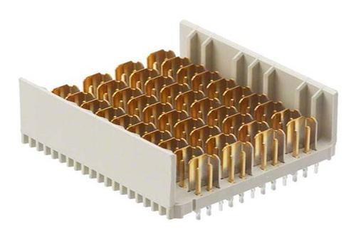

连接器如何转型才能适应工业4.0时代
2019-10-24
连接器
1．机械性能就连接功能而言，插拔力是重要地机械性能。插拔力分为插入力和拔出力（拔出力亦称分离力），两者的要求是不同的。在有关标准中有插入力和最小分离力规定，这表明，从使用角度来看，插入力要小（从而有低插入力LIF和无插入力ZIF的结构），而分离力若太小，则会影响接触的可靠性。 连接器的插拔力和机械寿命与接触件结构（正压力大小）接触部位镀层质量（滑动摩擦系数）以及接触件排列尺寸精度（对准度）有关。
2．电气性能连接器的主要电气性能包括接触电阻、绝缘电阻和抗电强度。
①接触电阻高质量的电连接器应当具有低而稳定的接触电阻。连接器的接触电阻从几毫欧到数十毫欧不等。
②绝缘电阻衡量电连接器接触件之间和接触件与外壳之间绝缘性能的指标，其数量级为数百兆欧至数千兆欧不等。
③抗电强度或称耐电压、介质耐压，是表征连接器接触件之间或接触件与外壳之间耐受额定试验电压的能力。
④其它电气性能。

电磁干扰泄漏衰减是评价连接器的电磁干扰屏蔽效果,电磁干扰泄漏衰减是评价连接器的电磁干扰屏蔽效果，一般在100MHz~10GHz频率范围内测试。
对射频同轴连接器而言，还有特性阻抗、插入损耗、反射系数、电压驻波比（VSWR）等电气指标。由于数字技术的发展，为了连接和传输高速数字脉冲信号，出现了一类新型的连接器即高速信号连接器，相应地，在电气性能方面，除特性阻抗外，还出现了一些新的电气指标，如串扰（crosstalk），传输延迟（delay）、时滞（skew）等。
上一篇：专业销售电源连接器产品...